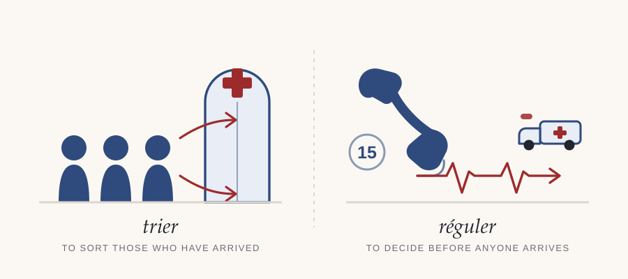

ICU and You · Le coin français · Number 3
In France a doctor answers the phone — and a doctor gets in the ambulance
This is not a travel column. The people in our unit come from everywhere, and so do the people who work in it. On any given shift the registrar trained in Dublin or Chennai, the nurse who grew up speaking Tagalog, the family who are more comfortable in Arabic and the patient whose grandmother is Gumbaynggirr are all in the same twelve square metres. That is not an unusual day. It is every day, and it has been for years.
Superdiversity is not a policy word for somebody else's problem. It is a description of the room you are standing in. Which means that knowing how medicine is done elsewhere is not general knowledge or broadening — it is local knowledge about your own colleagues and your own patients.
And there is a second reason, which matters more. Everything we do here was decided by somebody. The way we consent, who answers an emergency call, what we count as a fever, how we speak to a dying person's family: all of it looks inevitable from inside and turns out to be one option among several the moment you look at another country. Nothing shows you your own assumptions faster than watching competent people make different ones.
Some of these columns will change your practice. Most will not. All of them should make the familiar look slightly less obvious, which is the whole point.
A nine-year-old comes off a bicycle on a road outside Lyon. Somebody dials 15. The person who picks up is not a call-taker working to an algorithm. It is a doctor.
That single difference reorganises everything downstream, and it is the most instructive divergence between French and Australian prehospital care.
Every call to 15 reaches a SAMU centre — Service d'aide médicale urgente — where an assistant takes the details and then hands the caller to the médecin régulateur. That doctor talks to the caller, forms an impression, and decides what the call needs: advice and nothing else, a general practitioner, an ambulance crew, or a SMUR team — Service mobile d'urgence et de réanimation — which carries a physician, usually an anaesthetist or emergency physician, to the scene.
The verb is réguler, and it has no clean English equivalent. It is not triage, which sorts people who have already arrived. It is a clinical decision made on the telephone about what should happen next, taken by somebody qualified to be wrong about it.

The underlying philosophy has a name: amener l'hôpital au patient — bring the hospital to the patient. Where the Anglo-American model moves the patient to the doctor as fast as possible, the French model moves the doctor to the patient and begins definitive treatment where they lie. Intubation, sedation, chest drains, blood, and occasionally a great deal more, on a roadside.
Which is the honest position: both systems can point at outcomes, neither has produced the study that would end the argument, and the difference between them is not really evidential. It is a judgement about where definitive care should begin, made long ago, by different people, and then built into buildings and training and law.
« Réguler, ce n'est pas trier. Trier, c'est choisir parmi ceux qui sont déjà arrivés. Réguler, c'est décider, au téléphone, qui viendra — et qui ira. C'est une décision médicale prise avant d'avoir vu le malade, par quelqu'un qui accepte d'en répondre. Le médecin régulateur ne dispatche pas des véhicules : il engage sa responsabilité, depuis une pièce où l'on n'entend que des voix. »
In English: To regulate is not to triage. Triage means choosing among those who have already arrived. Regulation means deciding, on the telephone, who will come — and who will go. It is a medical decision taken before seeing the patient, by somebody prepared to answer for it. The regulating doctor is not dispatching vehicles: they are putting their own name to it, from a room where all you can hear is voices.
Une intoxication is a poisoning. Nothing to do with being drunk. An intoxication médicamenteuse volontaire — abbreviated IMV in French notes as routinely as we write DSH — is a deliberate drug overdose. Une intoxication au CO is carbon monoxide poisoning; une intoxication alimentaire is food poisoning.
This matters at the top of this age band, where ingestions stop being accidental. A French-trained colleague saying a teenager has had une intoxication is telling you something considerably more serious than an English ear hears.
Le carnet de santé. Every French child is issued one at birth and carries it to eighteen: vaccinations, growth, every consultation, held by the family rather than the system. By school age that is a decade of records that arrives with the child. We have the Blue Book and largely stop opening it after infancy, which is worth thinking about the next time you are reconstructing an immunisation history from memory at midnight.
Le Doliprane. Paracetamol, and close to a household word — one of the most dispensed medicines in France, to the point that the brand name is used for the drug the way we say Panadol. Which is the same hazard we describe in this fortnight's drug profile: when a family says what they have already given, they will say the brand, and the brand may be in more than one box.
If you have worked in a system that sends a doctor to the patient — was it better?
I would particularly like to hear from colleagues who trained in France, or anywhere else with a medicalised prehospital service, and from retrieval people here who have opinions about both. What does it genuinely do better, and what does it do worse? And what did you find hardest to give up when you moved between the two?
Everybody else is welcome too: what is the one thing you would take from another country's system if you could take exactly one?
The button opens a reply straight to me. If your device blocks it, write to icuandyou@icloud.com instead.